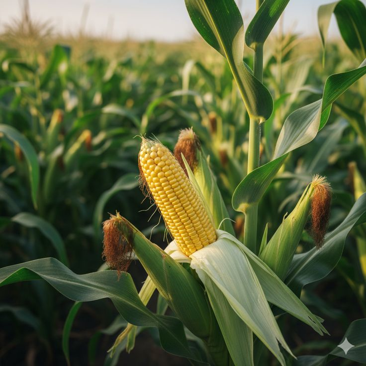
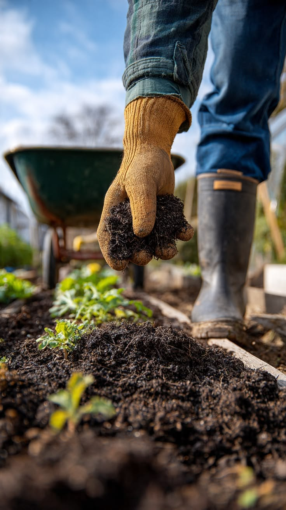

01
Livestock
Explore livestock and get in touch with the farm to ask about current availability and details.
Learn MoreExplore our farm products, equipment, and services shaped around everyday agricultural needs.
Explore livestock and get in touch with the farm to ask about current availability and details.
Learn More


Find out about our dairy products and availability by contacting the farm.
Learn More

Talk through your farming plans and the practical guidance you are looking for.
Learn MoreExplore cattle, goats, sheep, and pigs for farming and business. Ask about breed, age, weight, purpose, health information, and inspection arrangements.
Options for dairy, beef, and herd development.
Ask about animals for milk production, including age, breed, and lactation details where available.
Request a quoteEnquire about calves for rearing and ask about age, breed, and care information.
Request a quoteDiscuss animals for beef production or finishing, with size and weight confirmed at enquiry.
Request a quoteMeat, dairy, and breeding options.
Ask about available goats for meat production and the size or weight you need.
Request a quoteEnquire about dairy animals and share your production goals and preferred type.
Request a quoteAsk about young goats or breeding animals, subject to current availability.
Request a quoteAnimals for meat production and flock development.
Ask about available female sheep and suitability for your flock plans.
Request a quoteEnquire about available rams for flock improvement or meat production.
Request a quoteShare the number and size you need, and ask what is currently available.
Request a quoteAsk about animals for rearing, breeding, or finishing.
Enquire about young pigs for rearing and ask about age and care information.
Request a quoteDiscuss size, weight, quantities, and timing for growing or finishing pigs.
Request a quoteShare your breeding plans and ask about animals currently available.
Request a quoteMarket guide prices are reference points, not Marks Savannah Farm sale prices or live quotes. Final prices depend on breed, age, size, weight, season, and availability. Pig prices are quoted on request. Contact us to confirm today’s price, quantities, and delivery options.
Request current livestock pricesAsk about seasonal produce, order sizes, and supply for your household, shop, institution, or business.
Seasonal crops for household and commercial use.
Ask about available quantities, harvest timing, and bulk supply.
Request price & availabilityEnquire about seasonal availability and suitable order volumes.
Request price & availabilityAsk about available varieties, quantities, and collection or delivery.
Request price & availabilityCrop options for food, trade, and farm rotation.
Share the type and quantity you need, and we’ll confirm what is available.
Request price & availabilityEnquire about current or upcoming harvests and bulk requirements.
Request price & availabilityAsk about crops in season and the quantities available for your order.
Request price & availabilityAvailability and harvest periods vary by season.
Ask about available harvest volumes and supply arrangements.
Request price & availabilityTell us which vegetables and quantities you are sourcing for your business.
Request price & availabilityEnquire about seasonal fodder and volumes for livestock feeding.
Request price & availabilityPrices depend on crop type, grade, season, order size, and collection or delivery location. Contact us for current availability and a quote.
Explore poultry and related farm products for household, retail, and business orders.
Ask about purpose, age, quantities, and availability.
Enquire about meat birds, order quantities, and readiness dates.
Request price & availabilityAsk about available birds and whether they are mature or growing.
Request price & availabilityEnquire about laying birds or pullets for a poultry operation.
Request price & availabilityAsk about bird type, age, quantities, and current availability.
Enquire about available ducks for your farm or poultry business.
Request price & availabilityAsk about available turkey and suitable quantities for your order.
Request price & availabilitySupply details can be discussed for recurring or bulk needs.
Ask about tray quantities, collection, and regular supply.
Request price & availabilityShare bird type, quantity, preferred timing, and delivery location.
Request a bulk quoteDiscuss a recurring supply plan for your shop, hotel, or food business.
Discuss supplyAsk about current dairy availability, order size, packaging, and supply arrangements for your home or business.
Availability and packaging can vary by order.
Enquire about available volumes, collection, and delivery options.
Request price & availabilityAsk about product availability, container sizes, and order quantities.
Request price & availabilityEnquire about available flavours or sizes and wholesale quantities.
Request price & availabilityAsk about ghee availability, packaging sizes, and quantities for home or business use.
Request price & availabilityFor shops, restaurants, institutions, and regular buyers.
Share the products and quantities your business needs for a quote.
Request a bulk quoteDiscuss a delivery schedule and expected quantities for your business.
Discuss supplyAsk which dairy products and package sizes are currently available.
See what’s availableDairy prices depend on product, package size, order volume, and delivery arrangements. Contact us for current prices and availability.
Tell us about your farm, the work you need to do, and your preferred equipment specifications. We’ll confirm options, condition, and availability.
Ask about equipment by model, capacity, and condition.
Share the acreage, tasks, and power range you need for a suitable quote.
Request a quoteEnquire about implements compatible with your tractor and field conditions.
Request a quoteAsk about planting equipment by crop type, row spacing, and capacity.
Request a quoteEquipment options for irrigation and field maintenance.
Describe your water source, field size, and crop needs for a suitable option.
Request a quoteAsk about pump capacity and suitability for your water source and use.
Request a quoteShare the area and application needs so we can discuss suitable equipment.
Request a quoteEquipment prices depend on make, model, capacity, condition, and included accessories. Ask for current specifications and a quote.
Practical support shaped around your farm’s goals, location, scale, and current challenges.
Build a clearer plan for production and investment.
Discuss land use, production priorities, infrastructure, and a practical work plan.
Request a consultationTalk about crop choices, planting plans, and seasonal production decisions.
Request a consultationDiscuss livestock goals, housing, feeding plans, and day-to-day management needs.
Request a consultationFor new ventures and established farm businesses.
Work through your market, costs, production targets, and business priorities.
Request a consultationIdentify practical ways to improve workflows, record keeping, and resource use.
Request a consultationAsk about practical training for your team and the topics you want covered.
Request a consultationConsultancy fees depend on scope, farm size, location, duration, and any follow-up support. Share your goals for a tailored proposal.
Ask about farm products, livestock, or practical support for your plans.